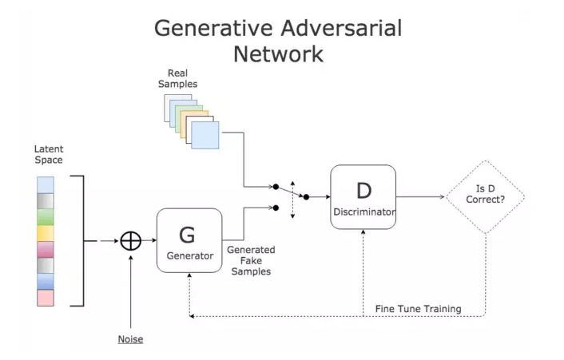
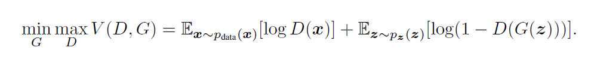
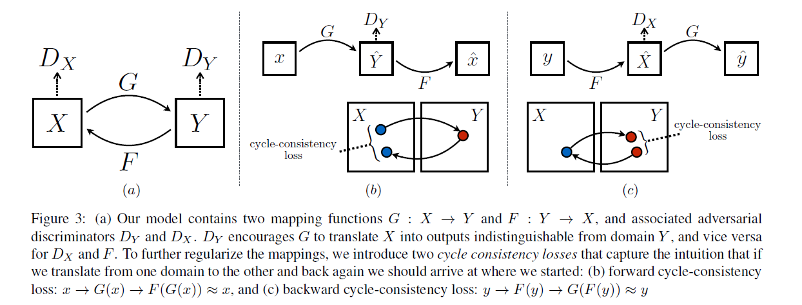
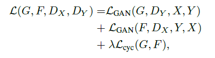
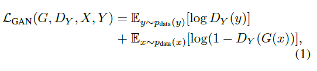
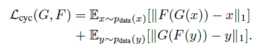
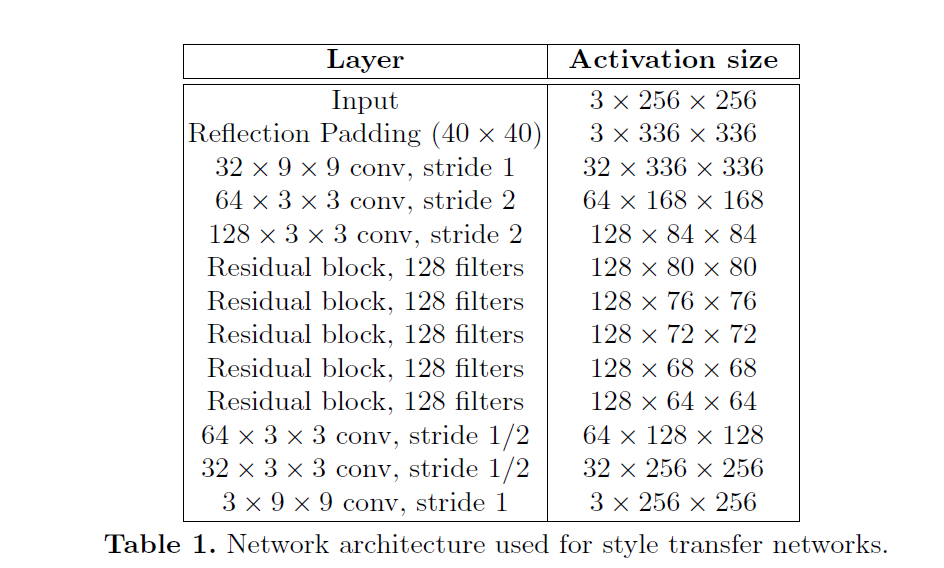
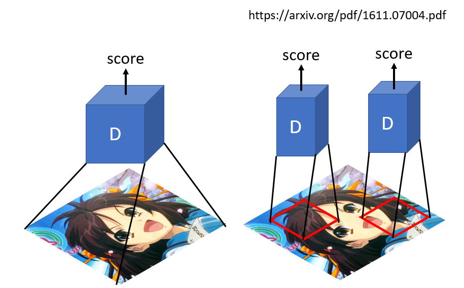
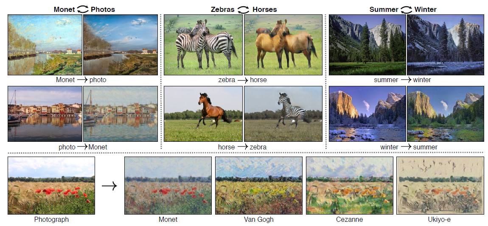
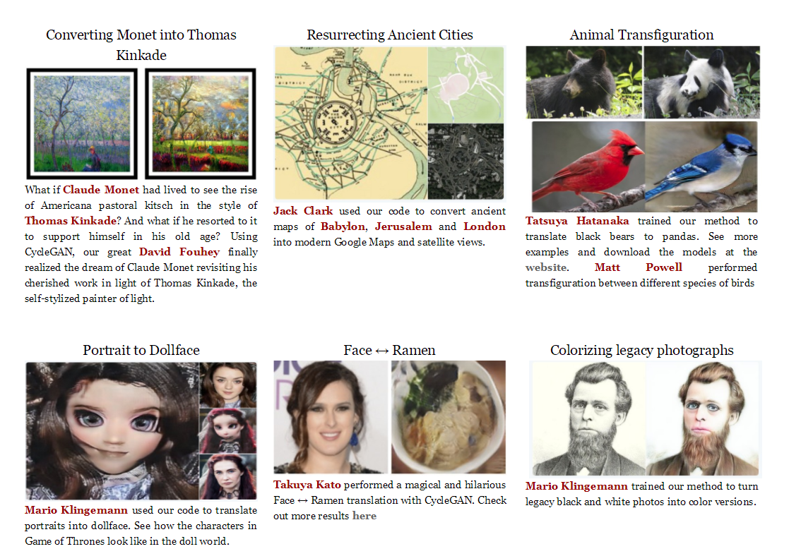

"干饭人，干饭魂，干饭都是人上人"。
此GAN饭人非彼干饭人。 本文要讲的GAN是Goodfellow2014提出的生成产生对抗模型，即Generative Adversarial Nets。那么GAN到底有什么神奇的地方?
常规的深度学习任务如图像分类，目标检测以及语义分割或者实例分割，这些任务的结果都可以归结为预测。图像分类是预测单一的类别，目标检测是预测bbox和类别，语义分割或者实例分割是预测每个像素的类别。而GAN是生成一个新的东西如一个图片。
GAN的原理用一句话来说明：
GAN的组成：判别式模型和生成式模型的左右手博弈
D判别式模型： 学习真假边界，判断数据是真的还是假的
G生成式模型：学习数据分布并生成数据

GAN经典的loss如下（minmax体现的就是对抗）

了解了GAN的作用，来体验的GAN的神奇效果。这里以cycleGAN为例子来实现图像的风格转换。所谓的风格转换就是改变原始图片的风格，如下图左边是原图，中间是风格图（梵高画），生成后是右边的具有梵高风格的原图，可以看到总体上生成后的图保留大部分原图的内容。
cycleGAN本质上和GAN是一样的，是学习数据集中潜在的数据分布。GAN是从随机噪声生成同分布的图片，cycleGAN是在有意义的图上加上学习到的分布从而生成另一个领域的图。cycleGAN假设image-to-image的两个领域存在的潜在的联系。
众所周知，GAN的映射函数很难保证生成图片的有效性。cycleGAN利用cycle consistency来保证生成的图片与输入图片的结构上一致性。我们看下cycleGAN的结构：

特点总结如下：
对抗loss如下：



从上面简介中生成器有两个生成器，一个是正向，一个是反向的。结构是参考论文Perceptual Losses for Real-Time Style Transfer and Super-Resolution: Supplementary Material。大致可以分为：下采样 + residual 残差block + 上采样，如下图（摘自论文）：

实现上下采样是stride=2的卷积， 上采样用nn.Upsample：
# 残差block class ResidualBlock(nn.Module): def __init__(self, in_features): super(ResidualBlock, self).__init__() self.block = nn.Sequential( nn.ReflectionPad2d(1), nn.Conv2d(in_features, in_features, 3), nn.InstanceNorm2d(in_features), nn.ReLU(inplace=True), nn.ReflectionPad2d(1), nn.Conv2d(in_features, in_features, 3), nn.InstanceNorm2d(in_features), ) def forward(self, x): return x + self.block(x) class GeneratorResNet(nn.Module): def __init__(self, input_shape, num_residual_blocks): super(GeneratorResNet, self).__init__() channels = input_shape[0] # Initial convolution block out_features = 64 model = [ nn.ReflectionPad2d(channels), nn.Conv2d(channels, out_features, 7), nn.InstanceNorm2d(out_features), nn.ReLU(inplace=True), ] in_features = out_features # Downsampling for _ in range(2): out_features *= 2 model += [ nn.Conv2d(in_features, out_features, 3, stride=2, padding=1), nn.InstanceNorm2d(out_features), nn.ReLU(inplace=True), ] in_features = out_features # Residual blocks for _ in range(num_residual_blocks): model += [ResidualBlock(out_features)] # Upsampling for _ in range(2): out_features //= 2 model += [ nn.Upsample(scale_factor=2), nn.Conv2d(in_features, out_features, 3, stride=1, padding=1), nn.InstanceNorm2d(out_features), nn.ReLU(inplace=True), ] in_features = out_features # Output layer model += [nn.ReflectionPad2d(channels), nn.Conv2d(out_features, channels, 7), nn.Tanh()] self.model = nn.Sequential(*model) def forward(self, x): return self.model(x)
传统的GAN 判别器输出的是一个值，判断真假的程度。而patchGAN输出是N*N值，每一个值代表着原始图像上的一定大小的感受野，直观上就是对原图上crop下可重复的一部分区域进行判断真假，可以认为是一个全卷积网络，最早是在pix2pix提出（Image-to-Image Translation with Conditional Adversarial Networks）。好处是参数少，另外一个从局部可以更好的抓取高频信息。
class Discriminator(nn.Module): def __init__(self, input_shape): super(Discriminator, self).__init__() channels, height, width = input_shape # Calculate output shape of image discriminator (PatchGAN) self.output_shape = (1, height // 2 ** 4, width // 2 ** 4) def discriminator_block(in_filters, out_filters, normalize=True): """Returns downsampling layers of each discriminator block""" layers = [nn.Conv2d(in_filters, out_filters, 4, stride=2, padding=1)] if normalize: layers.append(nn.InstanceNorm2d(out_filters)) layers.append(nn.LeakyReLU(0.2, inplace=True)) return layers self.model = nn.Sequential( *discriminator_block(channels, 64, normalize=False), *discriminator_block(64, 128), *discriminator_block(128, 256), *discriminator_block(256, 512), nn.ZeroPad2d((1, 0, 1, 0)), nn.Conv2d(512, 1, 4, padding=1) ) def forward(self, img): return self.model(img)

loss和模型初始化
# Losses criterion_GAN = torch.nn.MSELoss() criterion_cycle = torch.nn.L1Loss() criterion_identity = torch.nn.L1Loss() cuda = torch.cuda.is_available() input_shape = (opt.channels, opt.img_height, opt.img_width) # Initialize generator and discriminator G_AB = GeneratorResNet(input_shape, opt.n_residual_blocks) G_BA = GeneratorResNet(input_shape, opt.n_residual_blocks) D_A = Discriminator(input_shape) D_B = Discriminator(input_shape)
优化器和训练策略
# Optimizers optimizer_G = torch.optim.Adam( itertools.chain(G_AB.parameters(), G_BA.parameters()), lr=opt.lr, betas=(opt.b1, opt.b2) ) optimizer_D_A = torch.optim.Adam(D_A.parameters(), lr=opt.lr, betas=(opt.b1, opt.b2)) optimizer_D_B = torch.optim.Adam(D_B.parameters(), lr=opt.lr, betas=(opt.b1, opt.b2)) # Learning rate update schedulers lr_scheduler_G = torch.optim.lr_scheduler.LambdaLR( optimizer_G, lr_lambda=LambdaLR(opt.n_epochs, opt.epoch, opt.decay_epoch).step ) lr_scheduler_D_A = torch.optim.lr_scheduler.LambdaLR( optimizer_D_A, lr_lambda=LambdaLR(opt.n_epochs, opt.epoch, opt.decay_epoch).step ) lr_scheduler_D_B = torch.optim.lr_scheduler.LambdaLR( optimizer_D_B, lr_lambda=LambdaLR(opt.n_epochs, opt.epoch, opt.decay_epoch).step )
训练迭代
for epoch in range(opt.epoch, opt.n_epochs): for i, batch in enumerate(dataloader): # 数据是成对的数据，但是是非配对的数据，即A和B是没有直接的联系的 real_A = Variable(batch["A"].type(Tensor)) real_B = Variable(batch["B"].type(Tensor)) # Adversarial ground truths valid = Variable(Tensor(np.ones((real_A.size(0), *D_A.output_shape))), requires_grad=False) fake = Variable(Tensor(np.zeros((real_A.size(0), *D_A.output_shape))), requires_grad=False) # ------------------ # Train Generators # ------------------ G_AB.train() G_BA.train() optimizer_G.zero_grad() # Identity loss loss_id_A = criterion_identity(G_BA(real_A), real_A) loss_id_B = criterion_identity(G_AB(real_B), real_B) loss_identity = (loss_id_A + loss_id_B) / 2 # GAN loss fake_B = G_AB(real_A) loss_GAN_AB = criterion_GAN(D_B(fake_B), valid) fake_A = G_BA(real_B) loss_GAN_BA = criterion_GAN(D_A(fake_A), valid) loss_GAN = (loss_GAN_AB + loss_GAN_BA) / 2 # Cycle loss recov_A = G_BA(fake_B) loss_cycle_A = criterion_cycle(recov_A, real_A) recov_B = G_AB(fake_A) loss_cycle_B = criterion_cycle(recov_B, real_B) loss_cycle = (loss_cycle_A + loss_cycle_B) / 2 # Total loss loss_G = loss_GAN + opt.lambda_cyc * loss_cycle + opt.lambda_id * loss_identity loss_G.backward() optimizer_G.step() # ----------------------- # Train Discriminator A # ----------------------- optimizer_D_A.zero_grad() # Real loss loss_real = criterion_GAN(D_A(real_A), valid) # Fake loss (on batch of previously generated samples) # fake_A_ = fake_A_buffer.push_and_pop(fake_A) loss_fake = criterion_GAN(D_A(fake_A_.detach()), fake) # Total loss loss_D_A = (loss_real + loss_fake) / 2 loss_D_A.backward() optimizer_D_A.step() # ----------------------- # Train Discriminator B # ----------------------- optimizer_D_B.zero_grad() # Real loss loss_real = criterion_GAN(D_B(real_B), valid) # Fake loss (on batch of previously generated samples) # fake_B_ = fake_B_buffer.push_and_pop(fake_B) loss_fake = criterion_GAN(D_B(fake_B_.detach()), fake) # Total loss loss_D_B = (loss_real + loss_fake) / 2 loss_D_B.backward() optimizer_D_B.step() loss_D = (loss_D_A + loss_D_B) / 2 # -------------- # Log Progress # -------------- # Determine approximate time left batches_done = epoch * len(dataloader) + i batches_left = opt.n_epochs * len(dataloader) - batches_done time_left = datetime.timedelta(seconds=batches_left * (time.time() - prev_time)) prev_time = time.time() # Update learning rates lr_scheduler_G.step() lr_scheduler_D_A.step() lr_scheduler_D_B.step()
更多完整代码详见github:
本文训练的是莫奈风格的转变，如下图：第一二行是莫奈风格画转换为普通照片，第三四行为普通照片转换为莫奈风格画
再来看实际手机拍摄图片：


本文详细介绍了GAN的其中一种应用cycleGAN，并将它应用到图像风格的转换。总结如下：